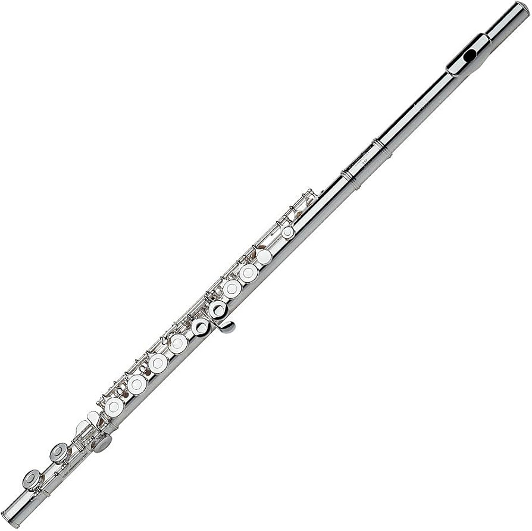

Flute

The flute is a graceful woodwind instrument known for its bright, delicate and melodious sound. Its expressive range and elegant tone make it a popular choice in orchestras,
chamber music and solo performances, creating captivating melodies that resonate with emotion.
Types of Flutes
Concert Flute (C Flute)
The most common type of flute. It produces a clear, bright tone and is widely used in orchestras, bands and solo performances.
- Price range: from $300 to $10,000+
Piccolo
A small flute that produces very high-pitched notes. Its bright sound makes it stand out in orchestral and marching band performances.
- Price range: from $500 to $5,000+
Alto Flute
A larger flute with a lower pitch and a mellow, rich tone. It is often used in orchestral and chamber music.
- Price range: from $2,00 to $10,000+
Bass Flute
A large flute that produces deep, soft tones. It is commonly found in flute ensembles and specialized musical arrangements.
- Price range: from $4,000 to $15,000+
Popular Brands
- Pearl
- Gemeinhardt
- Yamaha
- Trevor James
- Muramatsu